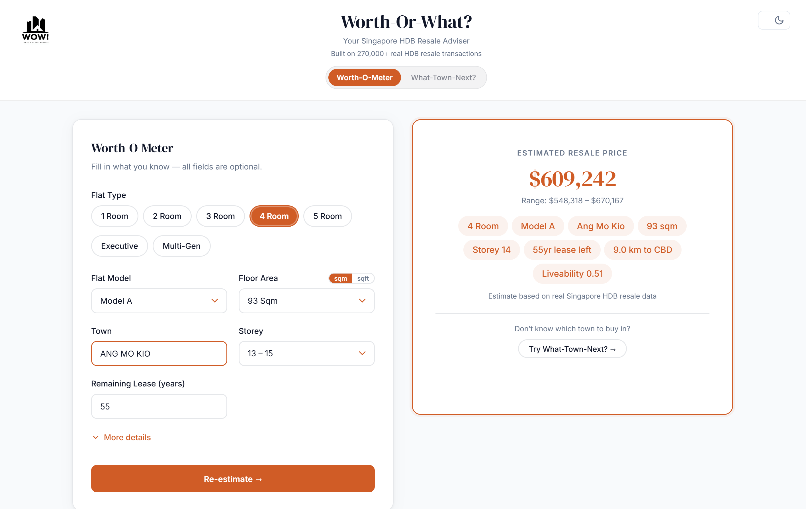
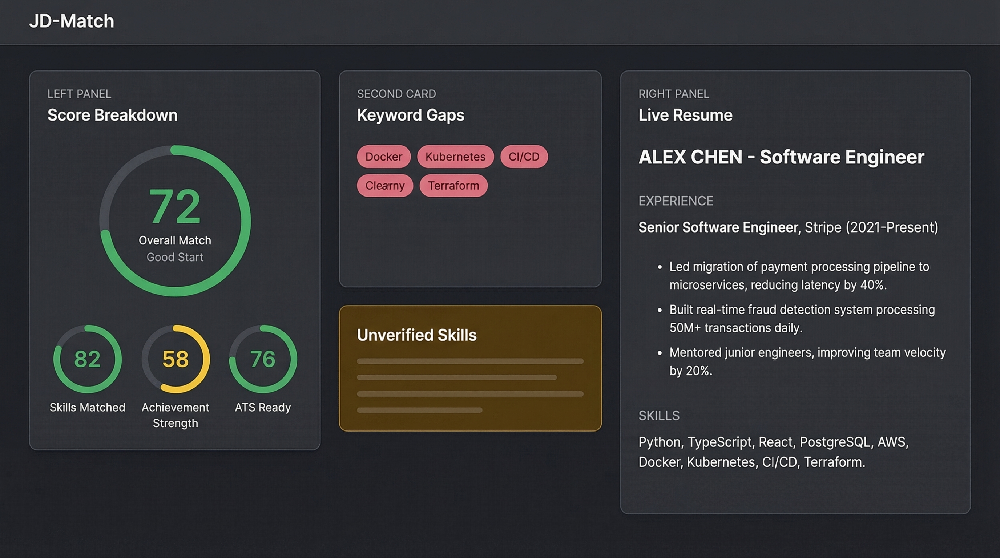
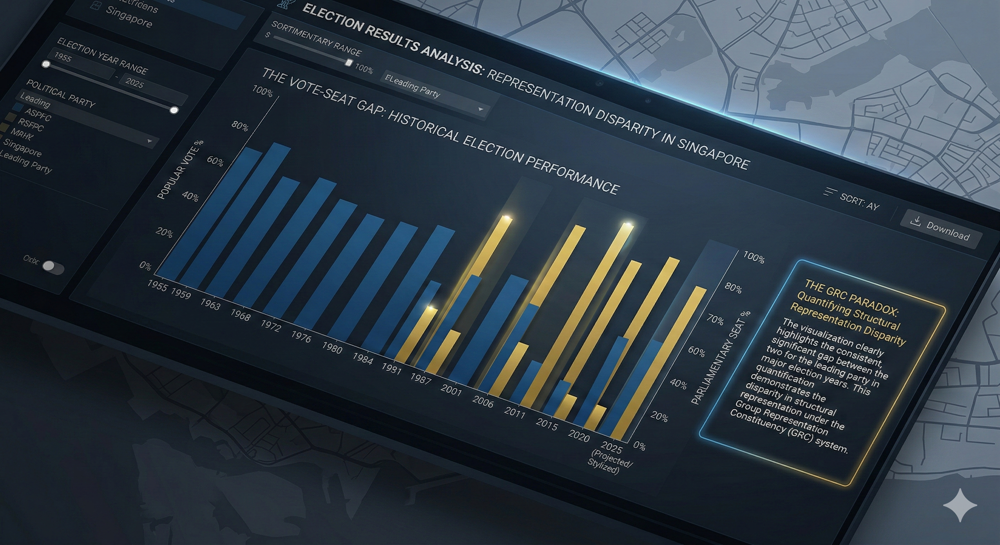
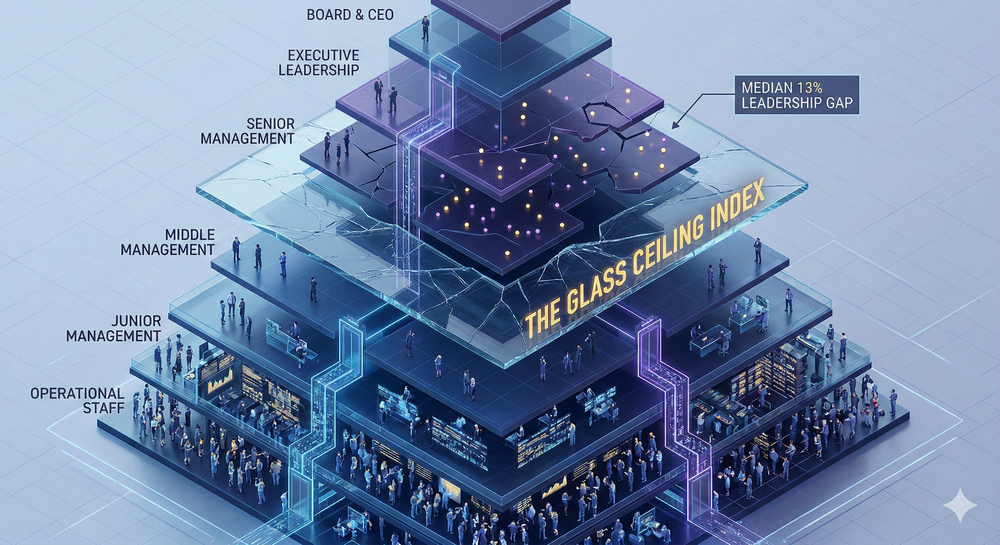

Data Analyst — Turning messy data into clear decisions
Selected Work
Machine Learning · Healthcare
Can a $300 smartwatch detect heart disease as reliably as a $3,000 clinical ECG? Tested across 8,500+ recordings with 84.4% sensitivity and 0.91 AUROC.
View Project
ML · Web App · Group Project
Is that HDB flat actually worth it? Price estimator hit 95.13% R² and the town recommender 99.71% accuracy — trained on 270,620 transactions across 26 towns.
View Project
Web App · AI
Why do qualified resumes get rejected by ATS filters? Built a tool that scores alignment across 15 categories and rewrites weak bullet points in one click.
View Project
Data Visualization
The Workers' Party averages 50.5% of every vote cast against them — yet holds just 9.3% of seats. Visualized 70 years of data to reveal why Singapore's quiet revolution is hidden in plain sight.
View Project
SQL · Dashboard
Where does the glass ceiling hit hardest? Queried 10,000+ UK companies and found a 13-point drop in women's representation from entry to senior roles.
View ProjectI started my career in fitness, spending 4+ years as a personal trainer where I tracked client metrics, built data-driven training programs, and discovered that the part I enjoyed most was the analysis itself — identifying trends, measuring outcomes, and translating numbers into actionable plans.
That realization led me to pursue data analytics formally. I completed the Google Data Analytics Professional Certificate and General Assembly's Data Analytics bootcamp, where I deepened my skills in SQL, Tableau, and exploratory data analysis. I then started building tools to put those skills into practice — from an AI-powered resume optimizer to interactive dashboards, and most recently leading a 7-person team to ship a machine learning web app that predicts HDB resale prices with 95% R² accuracy.
I'm now looking for my first data analyst role where I can combine my analytical foundation, communication skills from working with non-technical clients, and a builder's mindset for creating tools that make data accessible. I'm drawn to problems where data is messy, stakeholders are skeptical, and the right visualization can change someone's mind.
I'm always open to new opportunities, collaborations, or just a conversation about data and technology.